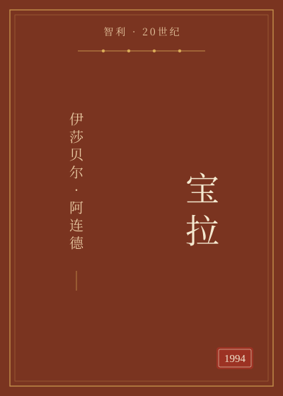
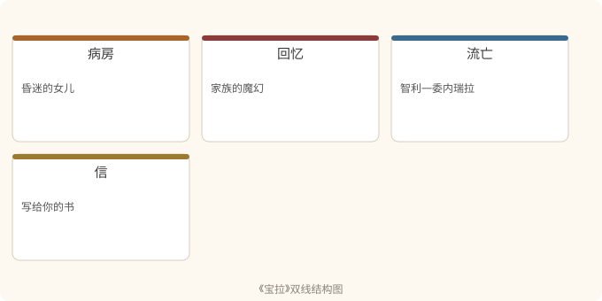

宝拉
一、基本信息
| 作者 | 阿连德 |
|---|---|
| 成书/出版 | 1994年（作者页 B158 口径：宝拉（1994）） Isabel Allende — Encyclopaedia Britannica（百科全书） |
| 国别/地区 | 智利 |
| 时代 | 现当代 · 20世纪 |
| 体裁 | 回忆录 |
| 语言 | 西班牙语 |

《宝拉》双线结构图（主题·结构图）
二、创作背景
作者页（B158）：阿连德 major_works 载'宝拉（1994）'（B158 作者页定位，详见 youlingzhijia 条核对）。
题材（通说待核）：女儿宝拉病危的病榻旁写作——家族史与魔幻记忆的双重回溯。
三、内容脉络
病榻旁的信：写给昏迷的女儿（通说待核）。
阿连德家族史：从智利到流亡（通说待核）。
四、主要人物表
| 人物 | 身份 | 说明 |
|---|---|---|
| 宝拉 | 女儿 | 昏迷者（通说待核） |
| 伊莎贝尔 | 母亲 | 写作者 |
五、主题与艺术特点
- 哀悼与记忆（通说）。
- 魔幻现实的家庭史（通说待核）。
- 流亡者的两重故乡（通说待核）。
六、影响与评论
- 作者页：阿连德非虚构代表作（B158 作者页口径）。
Isabel Allende — Encyclopaedia Britannica（百科全书） - 作者页：阿连德'幽灵之家'以来国际声誉（B158 作者级）。
Isabel Allende — Encyclopaedia Britannica（百科全书）
七、阅读建议
难点
- 双线（病房/家族史）交织。
- 哀悼书写的克制。
- 《宝拉》（译林出版社/北京十月文艺出版社版本，通说待核）。
- 西班牙文原版。
先《幽灵之家》后本作。
八、待核实
- 1994年出版（HarperCollins西语/英语）核对。
- 宝拉病情（卟啉症说）待核。
- 中译本信息待核。
本页主要来源
阿连德的其他收录作品：幽灵之家